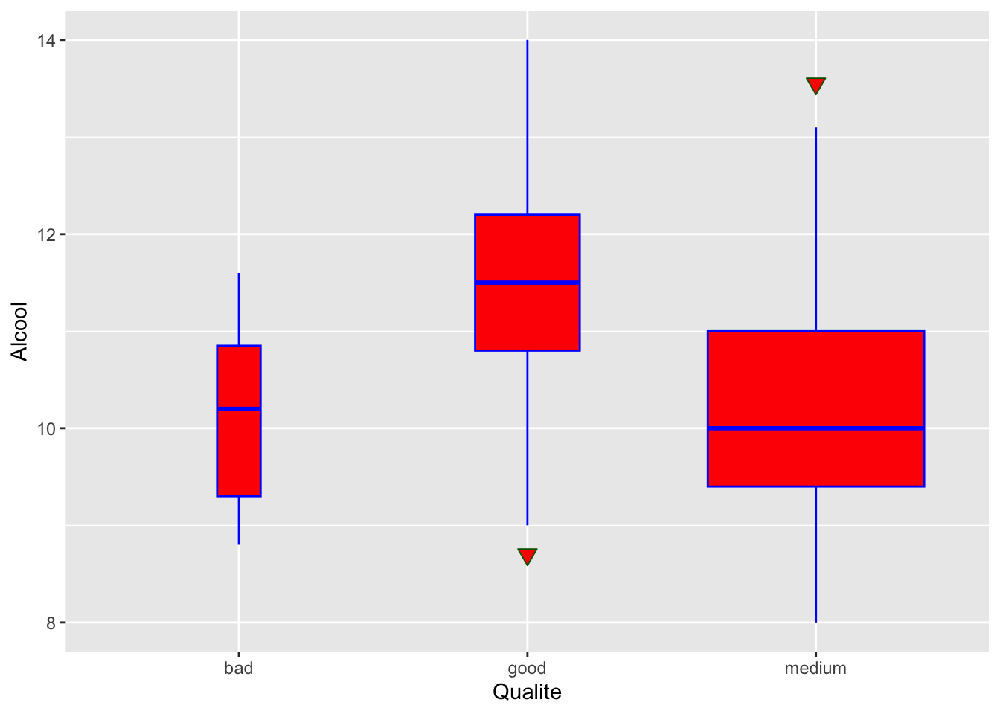

4 Pour aller plus loin avec R et RStudio
Dans ce tutoriel, nous allons aborder des points plus avancés de l’utilisation de R et RStudio. Nous allons donner quelques éléments sur le package tidyverse, en particulier des librairies ggplot2, dplyr, forcats et stringr qu’il contient. Dans une seconde partie, on abordera l’utilisation de Rmardown pour la rédaction de documents élégants contenant du texte, du code, des résultats d’execution, des expressions mathématiques en latex, …
4.1 Le package tidyverse 
4.1.1 Principe
Le terme tidyverse est une contraction de tidy (“bien rangé”) et de universe. C’est une collection d’extensions conçues pour travailler ensemble, avec des fonctions de syntaxe cohérente et compatibles, et basées sur une philosophie commune. Ces extensions sont en grande partie dues à Hadley Wickham.
En installant le package tidyverse, on installe plusieurs extensions qui constituent le “coeur” :
ggplot2(visualisation)dplyr(manipulation des données)tidyr(remise en forme des données)purrr(programmation)readr(importation de données)tibble(tableaux de données)forcats(variables qualitatives)stringr(chaînes de caractères)
Elles sont automatiquement chargées avec la commande library(tidyverse). On peut aussi les charger une à une (par exemple library(ggplot2)). La liste complète des extensions de tidyverse se trouve sur le site officiel du tidyverse.
La philosophie de tidyverse est basée sur le concept de tidy data, développé à l’origine par Hadley Wickham dans l’article “Tidy Data.” Journal of Statistical Software (2014). L’idée est d’organiser les données pour faciliter le travail de préparation des données avant l’analyse statistique. Les principes des données tidy sont :
- chaque variable est une colonne
- chaque observation est une ligne
- chaque type d’observation est dans une table différente
Une autre particularité du tidyverse est que les packages de tidyverse travaillent avec des tableaux de données de type tibble (géré avec le package du même nom), qui est une évolution du format data.frame de R. On peut convertir un data.frame en tibble avec la commande as_tibble(), et un tibble en data.frame avec as.data.frame().
Pour la suite de ce tutoriel, installez et chargez la librairie tidyverse:
install.packages("tidyverse")
library(tidyverse)Pour la suite, nous utiliserons le jeu de données wine disponible dans le dossier “Data/” , qui nous a déjà servi dans la partie 3.
Wine=read.table("Data/wine.txt",header=TRUE)head(Wine) Qualite Type AcidVol AcidCitr SO2lbr SO2tot Densite Alcool
1352 medium 1 0.62 0.01 8 46 0.99332 11.8
5493 medium 0 0.34 0.10 17 63 0.99370 9.2
5153 medium 0 0.22 0.22 39 110 0.99855 9.0
5308 medium 0 0.35 0.46 61 183 0.99786 9.0
3866 medium 0 0.42 0.32 20 167 0.99479 10.6
694 medium 1 0.48 0.32 21 122 0.99840 9.4class(Wine)[1] "data.frame"has_rownames(Wine)[1] TRUEWine.tbl = as_tibble(rownames_to_column(Wine))
Wine.tbl# A tibble: 600 × 9
rowname Qualite Type AcidVol AcidCitr SO2lbr SO2tot Densite Alcool
<chr> <chr> <int> <dbl> <dbl> <dbl> <int> <dbl> <dbl>
1 1352 medium 1 0.62 0.01 8 46 0.993 11.8
2 5493 medium 0 0.34 0.1 17 63 0.994 9.2
3 5153 medium 0 0.22 0.22 39 110 0.999 9
4 5308 medium 0 0.35 0.46 61 183 0.998 9
5 3866 medium 0 0.42 0.32 20 167 0.995 10.6
6 694 medium 1 0.48 0.32 21 122 0.998 9.4
7 5085 good 0 0.21 0.32 39 113 0.994 10.2
8 2280 medium 0 0.28 0.14 64 159 0.992 10
9 5231 medium 0 0.3 0.25 21 124 0.994 10.8
10 4388 medium 0 0.4 0.42 41 176 0.996 9.4
# ℹ 590 more rows4.1.2 Manipulation de variables qualitatives avec forcats
Les variables qualitatives peuvent être de deux types sous R, characteret factor, ce qui amène parfois à des erreurs de manipulation et d’utilisation de fonctions non adaptées au type de la variable qualitative étudiée. forcats est une extension de tidyverse qui permet de faciliter la manipulation des variables qualitatives quelque soit leur type. Voici quelques fonctions utiles de forcast :
fct_recode(): permet de recoder les modalités d’une variable qualitativefct_collapse(): permet de regrouper des modalitésfct_other(): permet de regrouper une liste de modalités dans une seule modalité “Other”fct_lump(): permet de regrouper automatiquement les modalités les moins fréquentes (seuil modifiable) en une seule modalité “Other”fct_explicit_na(): permet de recoder les données manquantesNAen une modalité choisiefct_relevel(): permet d’ordonner manuellement les modalités d’une variable qualitativefct_reorder(): permet d’ordonner les modalités d’une variable qualitative en fonction d’une autre variable à laquelle on applique une fonction donnée en argumentfct_infreq(): permet d’ordonner les modalités selon les effectifs
L’extension questionr propose une interface graphique pour recoder les modalités d’une variable qualitative. On peut aussi se servir de cette interface pour découper une variable quantitative en classes (pour faire comme la fonction cut()).
library(questionr)
Wine$Type=as.factor(Wine$Type)
Wine$Type=fct_recode(Wine$Type,"blanc"="0","rouge"="1")
freq(Wine$Type) n % val%
blanc 425 70.8 70.8
rouge 175 29.2 29.2freq(Wine$Qualite) n % val%
bad 19 3.2 3.2
good 110 18.3 18.3
medium 471 78.5 78.5Qualite = fct_recode(Wine$Qualite,"mauvais"="bad","bon"="good")
freq(Qualite) n % val%
mauvais 19 3.2 3.2
bon 110 18.3 18.3
medium 471 78.5 78.5freq(fct_relevel(Wine$Qualite, "good","bad","medium")) n % val%
good 110 18.3 18.3
bad 19 3.2 3.2
medium 471 78.5 78.5ggplot(Wine)+
geom_boxplot(aes(x = fct_reorder(Qualite, Alcool, median),
y = Alcool))+
xlab("Qualite")ggplot(Wine) +
geom_bar(aes(x = fct_infreq(Qualite)))+
xlab("Qualite")4.1.3 Manipulation avec dplyr 
dplyr est une extension pour le traitement et la manipulation de données contenues dans un ou plusieurs tableaux. Elle considère que les données sont organisées selon le tidy data, ses fonctions s’appliquent sur des tibble ou des data.frame et renvoient le résultat sous forme d’un tibble. Nous allons illustrer ici les fonctions principales disponibles dans dplyr.
La fonction slice() permet de sélectionner des lignes du tableau selon leur position. Par exemple si on souhaite accéder à la 20ème ligne du jeu de données Wine:
slice(Wine.tbl,20)# A tibble: 1 × 9
rowname Qualite Type AcidVol AcidCitr SO2lbr SO2tot Densite Alcool
<chr> <chr> <int> <dbl> <dbl> <dbl> <int> <dbl> <dbl>
1 6420 medium 0 0.36 0.5 63 178 0.992 9.7La fonction filter() filtre les lignes d’une table selon une condition. Seules les lignes pour lesquelles le test renvoie TRUE sont conservées.
Par exemple, si on veut ne conserver que les vins de Qualité “medium” :
filter(Wine.tbl,Qualite=="medium")# A tibble: 471 × 9
rowname Qualite Type AcidVol AcidCitr SO2lbr SO2tot Densite Alcool
<chr> <chr> <int> <dbl> <dbl> <dbl> <int> <dbl> <dbl>
1 1352 medium 1 0.62 0.01 8 46 0.993 11.8
2 5493 medium 0 0.34 0.1 17 63 0.994 9.2
3 5153 medium 0 0.22 0.22 39 110 0.999 9
4 5308 medium 0 0.35 0.46 61 183 0.998 9
5 3866 medium 0 0.42 0.32 20 167 0.995 10.6
6 694 medium 1 0.48 0.32 21 122 0.998 9.4
7 2280 medium 0 0.28 0.14 64 159 0.992 10
8 5231 medium 0 0.3 0.25 21 124 0.994 10.8
9 4388 medium 0 0.4 0.42 41 176 0.996 9.4
10 4172 medium 0 0.14 0.28 10 56 0.994 9.9
# ℹ 461 more rowsSi on veut ne conserver que les vins avec au moins 11 degrés d’alcool et une teneur en acide volatile de moins de 0.3 :
filter(Wine.tbl,Alcool>=11 & AcidVol<0.3)# A tibble: 99 × 9
rowname Qualite Type AcidVol AcidCitr SO2lbr SO2tot Densite Alcool
<chr> <chr> <int> <dbl> <dbl> <dbl> <int> <dbl> <dbl>
1 2155 good 0 0.25 0.34 31 93 0.992 11.3
2 2258 medium 0 0.27 0.25 41 188 0.992 11.3
3 4560 good 0 0.11 0.34 41 114 0.996 11
4 5430 good 0 0.26 0.23 23 111 0.993 11.5
5 6496 good 0 0.29 0.3 20 110 0.989 12.8
6 3046 medium 0 0.27 0.49 35 92 0.991 12.2
7 4690 medium 0 0.17 0.35 33 78 0.991 11.3
8 4799 good 0 0.21 0.4 40 121 0.992 12
9 5167 medium 0 0.26 0.27 20 80 0.991 11.5
10 5291 medium 0 0.22 0.26 23 112 0.993 11.4
# ℹ 89 more rowsSi on veut filtrer les vins ayant un taux d’alcool entre 10.5 et 11 :
filter(Wine.tbl,between(Alcool,10.5,11))# A tibble: 94 × 9
rowname Qualite Type AcidVol AcidCitr SO2lbr SO2tot Densite Alcool
<chr> <chr> <int> <dbl> <dbl> <dbl> <int> <dbl> <dbl>
1 3866 medium 0 0.42 0.32 20 167 0.995 10.6
2 5231 medium 0 0.3 0.25 21 124 0.994 10.8
3 4560 good 0 0.11 0.34 41 114 0.996 11
4 3615 medium 0 0.19 0.39 22 84 0.994 10.8
5 2983 medium 0 0.36 0.56 25 102 0.992 10.5
6 6347 medium 0 0.26 0.5 25 93 0.994 10.5
7 3003 good 0 0.26 0.31 29 128 0.994 10.9
8 1291 medium 1 0.74 0 6 12 0.995 11
9 1350 medium 1 0.57 0 21 41 0.995 10.8
10 6336 medium 0 0.16 0.36 13 61 0.991 10.8
# ℹ 84 more rowsLa fonction select() permet de sélectionner des colonnes d’une table. Nous donnons quelques exemples ci-dessous. On renvoie à l’aide ?select pour voir les options disponibles pour sélectionner plusieurs colonnes, sélectionner selon une condition sur les noms, … On peut aussi utiliser la fonction rename() (voir l’aide.)
Dans notre exemple, si on veut récupérer les variables Alcool et Qualite
select(Wine.tbl,Alcool,Qualite)# A tibble: 600 × 2
Alcool Qualite
<dbl> <chr>
1 11.8 medium
2 9.2 medium
3 9 medium
4 9 medium
5 10.6 medium
6 9.4 medium
7 10.2 good
8 10 medium
9 10.8 medium
10 9.4 medium
# ℹ 590 more rowsSi on veut éliminer les variables AcidVol et SO2tot :
select(Wine.tbl,-AcidVol,-SO2tot)# A tibble: 600 × 7
rowname Qualite Type AcidCitr SO2lbr Densite Alcool
<chr> <chr> <int> <dbl> <dbl> <dbl> <dbl>
1 1352 medium 1 0.01 8 0.993 11.8
2 5493 medium 0 0.1 17 0.994 9.2
3 5153 medium 0 0.22 39 0.999 9
4 5308 medium 0 0.46 61 0.998 9
5 3866 medium 0 0.32 20 0.995 10.6
6 694 medium 1 0.32 21 0.998 9.4
7 5085 good 0 0.32 39 0.994 10.2
8 2280 medium 0 0.14 64 0.992 10
9 5231 medium 0 0.25 21 0.994 10.8
10 4388 medium 0 0.42 41 0.996 9.4
# ℹ 590 more rowsSi on veut récupérer les colonnes dont le nom commence par Acid
select(Wine.tbl,starts_with("Acid"))# A tibble: 600 × 2
AcidVol AcidCitr
<dbl> <dbl>
1 0.62 0.01
2 0.34 0.1
3 0.22 0.22
4 0.35 0.46
5 0.42 0.32
6 0.48 0.32
7 0.21 0.32
8 0.28 0.14
9 0.3 0.25
10 0.4 0.42
# ℹ 590 more rowsSi on veut récupérer les colonnes qui contiennent Acid :
select(Wine.tbl,contains("Acid"))# A tibble: 600 × 2
AcidVol AcidCitr
<dbl> <dbl>
1 0.62 0.01
2 0.34 0.1
3 0.22 0.22
4 0.35 0.46
5 0.42 0.32
6 0.48 0.32
7 0.21 0.32
8 0.28 0.14
9 0.3 0.25
10 0.4 0.42
# ℹ 590 more rowsLa fonction `arrange() permet de réordonner les lignes du jeu de données en fonction d’une ou plusieurs variables.
Par exemple, pour ordonner les lignes de Wine en fonction des valeurs de la variable Alcool
arrange(Wine.tbl,Alcool)# A tibble: 600 × 9
rowname Qualite Type AcidVol AcidCitr SO2lbr SO2tot Densite Alcool
<chr> <chr> <int> <dbl> <dbl> <dbl> <int> <dbl> <dbl>
1 4225 medium 0 0.19 0.21 89 159 0.993 8
2 3185 medium 0 0.3 0.74 46 165 0.998 8.7
3 2830 medium 0 0.29 0.3 46 238 0.999 8.7
4 5650 good 0 0.16 0.27 25 135 0.998 8.7
5 5278 medium 0 0.23 0.25 19 111 1.00 8.7
6 1741 medium 0 0.37 0.67 49 155 0.998 8.7
7 1684 medium 0 0.43 0.61 54 155 0.997 8.7
8 1737 medium 0 0.37 0.67 49 155 0.998 8.7
9 3258 medium 0 0.31 0.49 52 220 0.996 8.8
10 1477 medium 1 0.5 0.5 48 82 1.00 8.8
# ℹ 590 more rowsPour trier par ordre décroissant, on utilise la fonction desc()
arrange(Wine.tbl,desc(Alcool))# A tibble: 600 × 9
rowname Qualite Type AcidVol AcidCitr SO2lbr SO2tot Densite Alcool
<chr> <chr> <int> <dbl> <dbl> <dbl> <int> <dbl> <dbl>
1 5504 good 0 0.455 0.18 33 106 0.987 14
2 6389 medium 0 0.62 0.33 24 118 0.988 13.6
3 5729 good 0 0.34 0.31 18 68 0.990 13.4
4 5103 good 0 0.33 0.31 21 93 0.990 13.4
5 5795 good 0 0.45 0.24 24 87 0.989 13.4
6 492 good 1 0.41 0.5 12 25 0.995 13.3
7 4973 good 0 0.28 0.24 49 121 0.989 13.2
8 6437 medium 0 0.28 0.38 54 216 0.992 13.1
9 5099 good 0 0.33 0.3 30 124 0.989 13.1
10 1288 medium 1 0.6 0.08 3 7 0.993 13
# ℹ 590 more rowsPour trier selon les deux variables Qualite et Alcool :
arrange(Wine.tbl,Qualite,Alcool)# A tibble: 600 × 9
rowname Qualite Type AcidVol AcidCitr SO2lbr SO2tot Densite Alcool
<chr> <chr> <int> <dbl> <dbl> <dbl> <int> <dbl> <dbl>
1 5812 bad 0 0.31 0.37 13 164 0.996 8.8
2 3937 bad 0 0.28 0.35 61 180 0.997 9
3 460 bad 1 0.58 0.66 10 47 1.00 9
4 2226 bad 0 0.56 0.12 22 177 0.998 9.1
5 2262 bad 0 0.57 0.1 23 188 0.997 9.2
6 4131 bad 0 0.54 0.27 8 178 0.995 9.4
7 3074 bad 0 0.25 0.24 13 85 0.994 9.5
8 1646 bad 0 0.45 0.26 63 206 0.994 9.8
9 4000 bad 0 0.19 0.42 16 104 0.995 10
10 4001 bad 0 0.16 0.49 18 107 0.995 10.2
# ℹ 590 more rowsOn peut remarquer que l’on obtient le même résultat avec la commande
Wine.tbl %>% arrange(Qualite,Alcool)# A tibble: 600 × 9
rowname Qualite Type AcidVol AcidCitr SO2lbr SO2tot Densite Alcool
<chr> <chr> <int> <dbl> <dbl> <dbl> <int> <dbl> <dbl>
1 5812 bad 0 0.31 0.37 13 164 0.996 8.8
2 3937 bad 0 0.28 0.35 61 180 0.997 9
3 460 bad 1 0.58 0.66 10 47 1.00 9
4 2226 bad 0 0.56 0.12 22 177 0.998 9.1
5 2262 bad 0 0.57 0.1 23 188 0.997 9.2
6 4131 bad 0 0.54 0.27 8 178 0.995 9.4
7 3074 bad 0 0.25 0.24 13 85 0.994 9.5
8 1646 bad 0 0.45 0.26 63 206 0.994 9.8
9 4000 bad 0 0.19 0.42 16 104 0.995 10
10 4001 bad 0 0.16 0.49 18 107 0.995 10.2
# ℹ 590 more rowsCette commande pipe %>% est importante dans dplyr.
On est souvent amené à enchaîner plusieurs opérations sur un tableau. Par exemple,
arrange(select(filter(Wine.tbl,Alcool>=11),Qualite,Alcool),Qualite)# A tibble: 205 × 2
Qualite Alcool
<chr> <dbl>
1 bad 11.5
2 bad 11.6
3 bad 11.5
4 bad 11.2
5 bad 11.2
6 good 12.7
7 good 11.3
8 good 11
9 good 11.5
10 good 12.8
# ℹ 195 more rowsmais cet enchainement de fonctions est peu lisible. On peut améliorer la lisibilité du code en utilisant le pipe, noté %>%. Si on execute `expr%>%f, le résultat de expr est passé comme premier argument de la fonction f, ce qui revient à executer f(expr). Ainsi notre exemple précédent peut se réécrire avec le code suivant :
Wine.tbl %>%
filter(Alcool>=11) %>%
select(Qualite,Alcool) %>%
arrange(Qualite)# A tibble: 205 × 2
Qualite Alcool
<chr> <dbl>
1 bad 11.5
2 bad 11.6
3 bad 11.5
4 bad 11.2
5 bad 11.2
6 good 12.7
7 good 11.3
8 good 11
9 good 11.5
10 good 12.8
# ℹ 195 more rowsCes fonctions permettent de créer une nouvelle variable à partir d’une ou plusieurs variables existantes en faisant un ou des tests. La fonction if_else() prend en argument un test, une valeur à renvoyer si le test est vrai, et une valeur à renvoyer si le test est faux. case_when() généralise if_else() en permettant de considérer plusieurs tests et leurs valeurs associées en même temps. Mais attention, les conditions étant testées l’une après l’autre, l’ordre des tests est important.
head(cbind(Wine$Alcool,if_else(Wine$Alcool>11,"Alcool sup. à 11", "Alcool inf. à 11"))) [,1] [,2]
[1,] "11.8" "Alcool sup. à 11"
[2,] "9.2" "Alcool inf. à 11"
[3,] "9" "Alcool inf. à 11"
[4,] "9" "Alcool inf. à 11"
[5,] "10.6" "Alcool inf. à 11"
[6,] "9.4" "Alcool inf. à 11"new <- case_when(
Wine$Alcool > 11 & Wine$Type == "rouge" ~ "vins rouges de degré sup. à 11",
Wine$Alcool > 11 & Wine$Type == "blanc" ~ "vins blancs de degré sup. à 11",
TRUE ~ "Autre")
freq(new) n % val%
Autre 413 68.8 68.8
vins blancs de degré sup. à 11 142 23.7 23.7
vins rouges de degré sup. à 11 45 7.5 7.5La fonction group_by() permet de créer des groupes de lignes à partir des valeurs d’une ou plusieurs variables. Par exemple on peut regrouper les vins selon leur qualité :
Wine.tbl %>% group_by(Qualite)# A tibble: 600 × 9
# Groups: Qualite [3]
rowname Qualite Type AcidVol AcidCitr SO2lbr SO2tot Densite Alcool
<chr> <chr> <int> <dbl> <dbl> <dbl> <int> <dbl> <dbl>
1 1352 medium 1 0.62 0.01 8 46 0.993 11.8
2 5493 medium 0 0.34 0.1 17 63 0.994 9.2
3 5153 medium 0 0.22 0.22 39 110 0.999 9
4 5308 medium 0 0.35 0.46 61 183 0.998 9
5 3866 medium 0 0.42 0.32 20 167 0.995 10.6
6 694 medium 1 0.48 0.32 21 122 0.998 9.4
7 5085 good 0 0.21 0.32 39 113 0.994 10.2
8 2280 medium 0 0.28 0.14 64 159 0.992 10
9 5231 medium 0 0.3 0.25 21 124 0.994 10.8
10 4388 medium 0 0.4 0.42 41 176 0.996 9.4
# ℹ 590 more rowsDans l’affichage, on voit apparaitre “Groups” dans les premières lignes, le reste n’a pas changé. Mais une fois les groupes créés, ils peuvent être utilisés dans les différentes fonctions de dplyr SAUF pour arrange().
Si on veut grouper selon plusieurs variables, il suffit de les passer en argument de group_by():
Wine.tbl %>% group_by(Qualite,Type)# A tibble: 600 × 9
# Groups: Qualite, Type [6]
rowname Qualite Type AcidVol AcidCitr SO2lbr SO2tot Densite Alcool
<chr> <chr> <int> <dbl> <dbl> <dbl> <int> <dbl> <dbl>
1 1352 medium 1 0.62 0.01 8 46 0.993 11.8
2 5493 medium 0 0.34 0.1 17 63 0.994 9.2
3 5153 medium 0 0.22 0.22 39 110 0.999 9
4 5308 medium 0 0.35 0.46 61 183 0.998 9
5 3866 medium 0 0.42 0.32 20 167 0.995 10.6
6 694 medium 1 0.48 0.32 21 122 0.998 9.4
7 5085 good 0 0.21 0.32 39 113 0.994 10.2
8 2280 medium 0 0.28 0.14 64 159 0.992 10
9 5231 medium 0 0.3 0.25 21 124 0.994 10.8
10 4388 medium 0 0.4 0.42 41 176 0.996 9.4
# ℹ 590 more rowsLa fonction summarise() permet de calculer quelques indicateurs statistiques sur une ou plusieurs variables. Par exemple, si on veut connaitre la teneur moyenne en acide volatile de tous les vins
Wine.tbl %>% summarise(AcidVolmean = mean(AcidVol, na.rm=TRUE))# A tibble: 1 × 1
AcidVolmean
<dbl>
1 0.351Si on veut maintenant la teneur moyenne en acide volatile sur tous les vins regroupés par qualité :
Wine.tbl %>% group_by(Qualite)%>%summarise(AcidVolmean = mean(AcidVol,na.rm=T))# A tibble: 3 × 2
Qualite AcidVolmean
<chr> <dbl>
1 bad 0.423
2 good 0.303
3 medium 0.360On veut également calculer la teneur en acide volatile minimale et maximale dans chaque groupe :
Wine.tbl %>% group_by(Qualite)%>%summarise(AcidVolmean = mean(AcidVol,na.rm=T),
AcidVolmin=min(AcidVol,na.rm=T),
AcidVolmax=max(AcidVol,na.rm=T))# A tibble: 3 × 4
Qualite AcidVolmean AcidVolmin AcidVolmax
<chr> <dbl> <dbl> <dbl>
1 bad 0.423 0.16 0.63
2 good 0.303 0.1 0.915
3 medium 0.360 0.12 1.04 summarise() possède un opérateur n() pour connaître le nombre de lignes par groupe :
Wine.tbl %>%
group_by(Qualite) %>%
summarise(nb = n())# A tibble: 3 × 2
Qualite nb
<chr> <int>
1 bad 19
2 good 110
3 medium 471n() peut aussi être utilisé avec filter() et mutate(). On peut aussi directement utiliser la fonction count()
Wine.tbl %>%count(Qualite) # A tibble: 3 × 2
Qualite n
<chr> <int>
1 bad 19
2 good 110
3 medium 471mutate() permet de créer de nouvelles variables (colonnes) dans le tableau en conservant toutes les autres variables existantes. Par exemple, si on convertit la densité, qui est donnée en g/cm3, en mg/cm3 :
Wine.tbl = mutate(Wine.tbl, densmg = 1000 * Densite)
select(Wine.tbl,Densite,densmg)# A tibble: 600 × 2
Densite densmg
<dbl> <dbl>
1 0.993 993.
2 0.994 994.
3 0.999 999.
4 0.998 998.
5 0.995 995.
6 0.998 998.
7 0.994 994.
8 0.992 992
9 0.994 994.
10 0.996 996.
# ℹ 590 more rowsLa fonction transmute() permet également d’ajouter une variable mais en supprimant les autres cette fois.
4.1.4 Manipulation de chaines de caractère avec stringr 
stringr est une extension pour la manipulation de chaînes de caractères. On présente ici les fonctions les plus utilisées, qui seront illustrées sur l’exemple suivant :
ExChaine <- tibble(
nom = c("M. Gérard MARTIN", "Mme Marie DUPONT", "M. Rémi THOMAS"),
adresse = c("30 avenue de la République", "40 rue de la Libération", "2 impasse des pivoines"),
ville = c("Toulouse", "Marseille", "Bordeaux")
)
ExChaine# A tibble: 3 × 3
nom adresse ville
<chr> <chr> <chr>
1 M. Gérard MARTIN 30 avenue de la République Toulouse
2 Mme Marie DUPONT 40 rue de la Libération Marseille
3 M. Rémi THOMAS 2 impasse des pivoines Bordeaux Pour plus de détails vous pouvez vous référer au chapitre 14 du livre de Wickham, H. et G. Grolemund (2016) dédié à la librairie stringr ainsi qu’au site web officiel de stringr.
La fonction str_length() permet d’obtenir la longueur d’une chaîne / tableau de caractères :
str_length(ExChaine)Warning in stri_length(string): argument is not an atomic vector; coercing[1] 59 84 38La fonction str_c() est la fonction de stringr dédiée à la concaténation des chaines de caractères. On a déjà vu la fonction paste()de R. Voici quelques exemples :
str_c(ExChaine$nom,ExChaine$ville,sep=" ")[1] "M. Gérard MARTIN Toulouse" "Mme Marie DUPONT Marseille"
[3] "M. Rémi THOMAS Bordeaux" str_c(ExChaine$nom,ExChaine$ville,sep="/-/")[1] "M. Gérard MARTIN/-/Toulouse" "Mme Marie DUPONT/-/Marseille"
[3] "M. Rémi THOMAS/-/Bordeaux" str_c(ExChaine$nom,c(" ","/---/","!!!"),ExChaine$ville)[1] "M. Gérard MARTIN Toulouse" "Mme Marie DUPONT/---/Marseille"
[3] "M. Rémi THOMAS!!!Bordeaux" Les fonctions str_to_lower(), str_to_upper() et str_to_title() permettent de mettre en minuscules, en majuscules, ou en lettres capitales respectivement les éléments d’une chaînes de caractères
str_to_lower(ExChaine$nom)[1] "m. gérard martin" "mme marie dupont" "m. rémi thomas" str_to_upper(ExChaine$nom)[1] "M. GÉRARD MARTIN" "MME MARIE DUPONT" "M. RÉMI THOMAS" str_to_title(ExChaine$nom)[1] "M. Gérard Martin" "Mme Marie Dupont" "M. Rémi Thomas" La fonction str_sub() permet d’extraire des sous-chaînes de caractères en indiquant les positions des premier et dernier caractères :
str_sub(ExChaine$nom,3,9)[1] " Gérard" "e Marie" " Rémi T"str_sub(ExChaine$nom,3)[1] " Gérard MARTIN" "e Marie DUPONT" " Rémi THOMAS" La fonction str_extract() permet d’extraire les valeurs correspondant à un motif.
str_extract(ExChaine,"pivoines")Warning in stri_extract_first_regex(string, pattern, opts_regex =
opts(pattern)): argument is not an atomic vector; coercing[1] NA "pivoines" NA Plus subtil, cette commande permet de récupérer tous les numéros des adresses :
str_extract(ExChaine$adresse, "^\\d+")[1] "30" "40" "2" Pour aller plus loin, vous pouvez consulter les références donner pour la librairie stringr.
La fonction str_detect() permet de détecter la présence d’un motif parmi les élements d’un vecteur de caractères. Elle renvoie un vecteur de booléens.
str_detect(ExChaine$nom,"o")[1] FALSE FALSE FALSEstr_detect(ExChaine$nom,"r")[1] TRUE TRUE FALSEstr_detect(str_to_lower(ExChaine$nom),"r")[1] TRUE TRUE TRUELa fonction str_count() dénombre les occurences d’un motif dans un vecteur de caractères.
str_count(ExChaine$nom,"r")[1] 2 1 0str_count(str_to_lower(ExChaine$nom),"r")[1] 3 1 1La fonction str_split() permet de découper une chaîne de caractère (premier argument) en fonction d’un délimiteur (second argument).
str_split(ExChaine," ")Warning in stri_split_regex(string, pattern, n = n, simplify = simplify, :
argument is not an atomic vector; coercing[[1]]
[1] "c(\"M." "Gérard" "MARTIN\"," "\"Mme" "Marie" "DUPONT\","
[7] "\"M." "Rémi" "THOMAS\")"
[[2]]
[1] "c(\"30" "avenue" "de" "la"
[5] "République\"," "\"40" "rue" "de"
[9] "la" "Libération\"," "\"2" "impasse"
[13] "des" "pivoines\")"
[[3]]
[1] "c(\"Toulouse\"," "\"Marseille\"," "\"Bordeaux\")" str_split(ExChaine$nom," ")[[1]]
[1] "M." "Gérard" "MARTIN"
[[2]]
[1] "Mme" "Marie" "DUPONT"
[[3]]
[1] "M." "Rémi" "THOMAS"str_split(ExChaine$nom,"r")[[1]]
[1] "M. Gé" "a" "d MARTIN"
[[2]]
[1] "Mme Ma" "ie DUPONT"
[[3]]
[1] "M. Rémi THOMAS"On peut également l’appliquer sur un tableau en ajoutant l’option simplify = TRUE.
La fonction str_replace() permet de remplacer une chaîne ou un motif par une autre.
str_replace(ExChaine$nom,"Mr","M.")[1] "M. Gérard MARTIN" "Mme Marie DUPONT" "M. Rémi THOMAS" Pour spécifier plusieurs remplacements d’un coup, on peut utiliser str_replace_all()
str_replace_all(ExChaine$adresse,c("avenue"="Av.","rue"="Rue","impasse"="Imp."))[1] "30 Av. de la République" "40 Rue de la Libération"
[3] "2 Imp. des pivoines" 4.1.5 Visualisation avec ggplot2
ggplot2 est une extension dédiée aux graphiques. Elle est basée sur une syntaxe particulière (il faut oublier les graphiques de base de R) mais robuste et efficace pour la construction de graphiques complexes. Elle demande donc un peu d’investissement pour se familiariser avec la syntaxe. Elle part du principe (comme tout package de tidyverse) que les données relatives au graphique sont stockées dans un tableau (data.frame ou tibble). Pour plus de détails, on peut consulter le livre “Ggplot2: Elegant Graphics for Data Analysis” de Wickham (2016) et le site web de ggplot2.
Un graphique en ggplot2 s’initialise avec la fonciton ggplot() qui prend en argument le jeu de données étudié. Par exemple, pour le jeu de données Wine,
gEx = ggplot(data=Wine)Pour l’instant, on ne voit rien mais pourtant l’objet gEx contient des informations :
summary(gEx)data: Qualite, Type, AcidVol, AcidCitr, SO2lbr, SO2tot, Densite, Alcool
[600x8]
faceting: <ggproto object: Class FacetNull, Facet, gg>
compute_layout: function
draw_back: function
draw_front: function
draw_labels: function
draw_panels: function
finish_data: function
init_scales: function
map_data: function
params: list
setup_data: function
setup_params: function
shrink: TRUE
train_scales: function
vars: function
super: <ggproto object: Class FacetNull, Facet, gg>names(gEx) [1] "data" "layers" "scales" "guides" "mapping"
[6] "theme" "coordinates" "facet" "plot_env" "layout"
[11] "labels" gEx$layerslist()mais pour l’instant son layers est vide.
On ajoute ensuite des éléments graphiques, appelés geom, à l’objet graphique grâce à l’opérateur + et on précise à l’aide de la fonction aes() les données à utiliser en argument du geom. Par exemple, si on veut faire l’histogramme de la variable Alcool
ggplot(data=Wine)+
geom_histogram(aes(x=Alcool))`stat_bin()` using `bins = 30`. Pick better value with `binwidth`.
On peut également ajouter un mappage, c’est à dire une mise en relation entre un attribut graphique d’un geom et une variable du tableau de données. Par exemple, on peut mettre des couleurs à un nuage de points en fonction d’une variable qualitative, … Il faut bien distinguer un mappage d’une modification d’un attribut graphique sans lien avec une variable. Une règle importante à retenir est donc
- pour définir un mappage (relation entre les valeurs d’une variable et un attribut graphique), on le déclare dans
aes() - pour modifier un attribut graphique de la même manière pour tous les points, on le définit en-dehors de la fonction
aes().
Dans la présentation qui suit des geom usuels, on proposera quelques illustrations de mappages. Chaque geom a sa liste de mappages possibles.
4.1.5.1 Les geom usuels
Nous allons ici présenter les geom les plus connus.
geom_histogram() permet de représenter l’histogramme d’une variable quantitative.
ggplot(data=Wine)+
geom_histogram(aes(x=Alcool))ggplot(data=Wine)+
geom_histogram(aes(x=Alcool),binwidth=0.2,color="red",fill="white")ggplot(data=Wine)+
geom_histogram(aes(x=Alcool,fill=Qualite),binwidth=0.2)geom_point() permet de représenter un nuage de points. Il faut préciser la position en x (la variable sur l’axe horizontal) et en y (la variable sur l’axe vertical) de ces points dans aes().
ggplot(data=Wine) +
geom_point(aes(x=Alcool,y=Densite))On peut modifier certains attributs de ce graphique comme la couleur des points (color), la taille des points (size), leur transparence (alpha).
ggplot(data=Wine) +
geom_point(aes(x=Alcool,y=Densite),color="darkblue",size=3,alpha=0.4)
ggplot(data=Wine) +
geom_point(aes(x=Alcool,y=Densite,color=Qualite,size=AcidVol),alpha=0.6)geom_boxplot() permet de représenter des boxplot (boites à moustaches). On lui précise en y la variable quantitative dont on veut étudier la répartition, et en x la variable qualitative contenant les groupes à comparer.
ggplot(data=Wine)+
geom_boxplot(aes(x=Qualite,y=Alcool))Vous pouvez vous référer à l’aide et la documentation en ligne pour ensuite améliorer ce graphique en modifiant certaines options.
ggplot(data=Wine)+
geom_boxplot(aes(x=Qualite,y=Alcool))+
coord_flip()ggplot(data = Wine) +
geom_boxplot(aes(x=Qualite,y=Alcool),outlier.colour="darkgreen", outlier.shape=25,
outlier.size=3, varwidth = T,fill="red",color="blue")
geom_violin() est très proche de la représentation boxplot mais utilise la représentation en violon plutôt que la boite à moustaches, ce qui permet de mieux visualiser la distribution des données.
ggplot(data=Wine)+
geom_violin(aes(x=Qualite,y=Alcool))ggplot(data =Wine) +
geom_violin(aes(x=Qualite,y=Alcool), fill="red",color="blue")geom_bar() permet la représentation en batôns (barplot) d’une variable qualitative (précisée en argument x à aes()).
ggplot(data=Wine) +
geom_bar(aes(x=Qualite))On peut modifier le visuel en changeant certaines options. Par exemple,
ggplot(data=Wine) +
geom_bar(aes(x=Qualite),fill = "darkblue", width = .5)ggplot(data=Wine) +
geom_bar(aes(x=Qualite,y = ..prop..,group=1),fill = "darkblue", width = .5)On peut aussi obtenir la représentation en camembert en modifiant un peu le graphique en baton en passant en “coordonnées polaires”
ggplot(Wine, aes(x = " ", fill = Qualite))+
geom_bar(width = 1)+
coord_polar(theta = "y")geom_density() permet de représenter l’estimation de la densité d’une variable quantitative. Son utilisation est similaire à geom_histogram().
ggplot(data=Wine) +
geom_density(aes(x=Alcool))ggplot(data=Wine) +
geom_density(aes(x=Alcool,fill=Qualite),alpha=0.3)geom_line() permet de tracer des lignes pour connecter des points entre eux. C’est en particulier utiliser pour représenter des séries temporelles.
data("economics")
ggplot(data=economics) +
geom_line(aes(x = date, y = unemploy))
4.1.5.2 Pour aller plus loin
On peut représenter plusieurs geom sur un même graphique simultanément, il suffit d’utiliser l’opérateur + pour les ajouter au fur et à mesure. On donne ici quelques exemples pour illustrer.
ggplot(data=Wine)+
geom_violin(aes(x=Qualite,y=Alcool))+
geom_point(aes(x=Qualite,y=Alcool), col = "blue", alpha = 0.2,position="jitter")ggplot(data=Wine,aes(x=Alcool,y=Densite))+
geom_point()+
geom_smooth(method="lm")
faceting est le terme pour faire un même graphique plusieurs fois selon les modalités d’une ou des variable(s) qualitative(s). On peut utiliser les fonctions facet_wrap() et facet_grid() qui prennent une variable qualitative sous la forme d’une formule ~variable. Les différents graphiques sont affichés les uns à côtés des autres avec facet_wrap() et selon une grille avec facet_grid() (prend une formule variable ligne ~ variable colonne).
ggplot(data=Wine) +
geom_point(aes(x=Alcool,y=Densite))+
facet_wrap(~Qualite)ggplot(data=Wine) +
geom_point(aes(x=Alcool,y=Densite))+
facet_grid(Qualite~.)ggplot(data=Wine) +
geom_point(aes(x=Alcool,y=Densite))+
facet_grid(Qualite~Type)Les scales permettent de modifier la façon dont un attribut graphique est lié aux valeurs d’une variable. Pour les modifier, on ajoute un nouvel élément de la forme scale_<attribut>_<type> à l’objet graphique ggplot2 avec +. Les fonctions scale les plus connues sont :
scale_size()(avec son argumentrange) pour modifier les tailles minimales, maximales, …scale_x()etscale_y()pour modifier l’axexet l’axeyrespectivementscale_x_continuous()(resp.scale_x_discrete()) pour modifier l’axe desxdans le cas d’une variable quantitative (resp. une variable qualitative)scale_y_continuous()(resp.scale_y_discrete()) pour modifier l’axe desydans le cas d’une variable quantitative (resp. une variable qualitative)scale_color()pour modifier les couleurs de dessinscale_fill()pour modifier les couleurs de remplissage
Pour les couleurs, on peut spécifier un gradient de couleur sur une variable quantitative avec scale_color_gradient(), modifier manuellement la palette de couleur avec scale_color_manual(), faire appel à une palette de couleur prédéfinie (par exemple en utilisant le package viridis avec scale_color_viridis, en s’appuyant sur les palettes disponibles dans ColorBrewer avec scale_color_brewer()), …
ggplot(data=Wine)+
geom_point(aes(x=Alcool,y=Densite,size=AcidVol))+
scale_size("Acide vol.", range = c(0,1.5),breaks=seq(0,1.5,0.2)) +
scale_x_continuous("Alcool",limits=c(8,16)) +
scale_y_continuous("Densité",limits=c(0.985,1.01))ggplot(Wine) +
geom_bar(aes(x = Qualite)) +
scale_x_discrete("Qualité du vin")
Les thèmes permettent de gérer l’affichage des éléments graphiques non liés aux données comme les titres, les fonds, les grilles, … Il existe plusieurs thèmes prédéfinis comme theme_classic(), theme_minimal() et theme_bw(). On a aussi le package ggthemes qui fournit d’autres thèmes par exemple.
g=ggplot(data=Wine)+
geom_point(aes(x=Alcool,y=Densite))
g1=g+theme_classic()
g2=g+theme_minimal()
g3=g+theme_bw()
grid.arrange(g1,g2,g3,ncol=3)On peut modifier chaque élément séparément avec une commande spécifique, par exemple :
ggtitle()pour modifier le titrexlab()etylab()pour modifier l’intituler de l’axe des abscisses et des ordonnées respectivement
Avec la fonction theme(), on peut contrôler les éléments graphiques incluant :
- les éléments linéaires (
element_line()): traits des axes, traits des grilles mineur et majeur, bordure du panneau graphique, graduation des axes, couleurs de fond, … - les éléments textuels (
element_text()): titre du graphique et des axes, titre et textes de la légende, les étiquettes des graduations des axes, … - les éléments rectangulaires (
element_rect()) : arrière plan du graphique, du panneau et de la légende, … Les fonctions entre parenthèses sont spécifiques pour modifier chacun de ces trois éléments.
En bref, les possibles avec ggplot2 sont infinis car de nombreux éléments sont personnalisables. Un moyen pour maitriser toutes ces possibilités est l’utilisation de l’addin RStudio ggThemeAssist. Pour cela, il faut installer le package ggThemeAssist, de sélectionner le code correspondant à un graphique ggplot2 et d’aller dans le menu Addins pour choisir ggplot Theme Assistant. Une interface graphique s’ouvre alors, permettant de modifier différents éléments du graphique et d’en récupérer le code correspondant.
On donne ici une liste non exhaustive de packages que l’on peut utiliser en complément de ggplot2 :
- Le package plotly permet d’avoir des graphiques interactifs. On peut par exemple utiliser la fonction
ggplotly()sur un graphique ggplot2 - Le package gridExtra permet d’organiser plusieurs graphiques sur une même fenêtre graphique. On peut par exemple utiliser la fonction
grid.arrange().
- Le package cowplot contient des fonctionnalités qui permettent d’avoir des graphiques de qualité pour des publications, en particulier pour l’organisation de plusieurs graphiques.
- Le package esquisse est un package qui fournit une interface graphique pour la construction de graphiques avec ggplot2.
library(plotly)
g=ggplot(Wine,aes(x=Alcool,y=Densite))+
geom_point()+
geom_smooth()
ggplotly(g)Nous donnons ici quelques références pour les graphiques en ggplot2 mais il existe de nombreuses ressources sur le web :
- Le livre Ggplot2: Elegant Graphics for Data Analysis de H. Wickham. (Wickham 2016)
- Le site web de ggplot2
- The R Graph Gallery
- The Cheat Sheet de ggplot 2
4.2 Le package rmarkdown 
L’extension Rmarkdown permet de créer des documents dans différents formats (html, pdf, docx, slides, …) qui contiennent du texte, du code (en R mais pas que!), les résultats, … L’utilisation de Rmarkdown permet d’obtenir un document final reproductible, associant code, résultats et commentaires. Le document peut être facilement regénéré et mis à jour (par exemple si les données étudiées ont été modifiées).
Nous allons donner ici des éléments de base pour la création de documents avec Rmarkdown. Pour plus de détails, vous pouvez consulter par exemple le livre en ligne R Markdown: The Definitive Guide de Y. Xie, J. J. Allaire, G. Grolemund. (2018)
4.2.1 Etapes de création d’un document
Un document Rmarkdown est un fichier enregistré avec l’extension .Rmd. Pour créer un nouveau document, allez dans File-> NewFile-> Rmarkdown... (ou cliquez sur l’icone nouveau document et choisissez Rmarkdown). La boîte de dialogue suivante s’ouvre :
Vous pouvez choisir le format du fichier final souhaité, préciser le titre et l’auteur (qui peuvent être modifiés ensuite si besoin). On peut remarquer que l’on peut aussi faire des présentations avec Rmarkdown et on peut utiliser des templates existants.
Exercice :
Créez un nouveau document Rmarkdown au format html avec le titre et l’auteur de votre choix. Vous pouvez constater qu’un nouveau document prérempli vient de s’ouvrir dans RStudio. Nous allons maintenant détailler le contenu de ce document.
Un document Rmarkdown débute toujours par l’en-tête qui est encadré par 3 tirets ---. Cet en-tête contient les métadonnées du document : le titre, l’auteur, la date, le format de sortie (output). Quelques éléments seront précisés dans la section Contenu de l’en-tête.
On a ensuite le corps du document qui peut contenir
- du texte selon la syntaxe markdown (voir la section Quelques éléments markdown)
- des blocs de code (appelés chunks) en R, Python, … (voir la section Options des blocs de code)
- des formules mathématiques (écrites en latex entre
$ ... $) - des images, tableaux, références, ….
Vous pouvez compiler à tout moment le document Rmarkdown en cliquant sur le bouton et de choisir le format de sortie voulu. Un onglet R Markdown s’ouvre alors dans la même zone que l’onglet Console pour indiquer la progression de la compilation et les messages d’erreur éventuels. Une fois la compilation effectuée, le document obtenu s’ouvre et vous pouvez admirer le rendu. Vous pouvez personnaliser le document de sortie en cliquant sur l’icone et en choisissant Output Options....
Remarque:
Pour la compilation d’un document en pdf, il est nécessaire d’avoir installé un compilateur de Latex sur son ordinateur. Si ce n’est pas le cas, vous pouvez utiliser l’extension
tinytex(voir ici pour plus de détails)
install.packages("tinytex")
tinytex::install.tinytex()4.2.2 Contenu de l’en-tête
Un document Rmarkdown débute par un en-tête entre --- au format YAML contenant les métadonnées du document. Voici un exemple de base de préambule :
---
title: "Titre"
author: "Prénom Nom"
date: "31 aout 2020"
output: html_document
---Ici output: html_document indique le document final généré sera au format html. On peut modifier cette option par pdf_documentpour un document pdf, word_document pour docx, et bien d’autres possibilités.
En executant la fonction Sys.Date() pour l’option date, la date sera remise à jour automatiquement à chaque compilation du document.
On peut préciser des options au document final en ajoutant des sous-options à droite du output. Il est également possible de spécifier des options différentes selon les formats. Voici un exemple :
---
title: "Titre"
author: "Prénom Nom"
date: "`r Sys.Date()`"
output:
html_document :
toc : TRUE
toc_float : TRUE
number_sections : TRUE
fig_width : 4
pdf_document :
fig_caption: TRUE
highlight: kate
---Voici une liste avec quelques éléments :
number_section : truepermet de numéroter les sectionshighlightpermet de spécifier le style syntaxique (par exdefault,tango,pygments,kate, …).- on peut ajouter son propre fichier de style .css avec l’option
css - on peut préciser des options concernant les figures avec
fig_width,fig_height,fig_caption,dev, … - on peut ajouter une bibliographie à partir d’un fichier
.bibavec l’optionbibliography
Si vous utilisez la boite de dialogue des options du document de sortie Output Options ..., l’en-tête sera remis à jour pour suivre les options choisies.
Pour plus de détails voir le site détaillant les R Markdown formats et l’aide mémoire de Rmarkdown (accessible via Help -> Cheatsheets -> Rmarkdown Cheat Sheet).
Exercice :
Créez un nouveau fichier Rmarkdown et enregistrez-le. Modifiez les options dans l’en-tête et compilez le document pour constater l’impact sur le document généré
4.2.3 Quelques éléments markdown
Le texte d’un document Rmarkdown est régi par le langage markdown. Voici quelques éléments de syntaxe et de mise en forme

Remarque: Si vous avez organisé votre document avec des sections / sous-sections en faisant débuter une ligne par un ou plusieurs #, alors vous pouvez cliquer sur l’icone à droite de la barre d’outils associée au fichier R Markdown pour visualiser la table des matières générée automatiquement qui vous permet de naviguer facilement dans le document.
Pour plus de détails, on peut aller voir
- sous RStudio, allez dans
Help -> Markdown Quick Reference: une fenêtre d’aide en bas à droite s’ouvre donnant les bases de syntaxe markdown - sous RStudio, allez dans
Help -> Cheatsheets -> R Markdown Cheat Sheetqui permet d’aller consulter le document suivant. - Consulter la page web du markdown guide
4.2.4 Options des blocs de code (chunks)
Pour insérer du code dans un document Rmarkdown, on utilise des blocs appelés chunk. Pour cela, il suffit de cliquer sur l’icone d’insertion d’un chunk dans la barre d’outils d’un document Rmarkdown. Il est possible d’insérer un chunk de code R mais pas seulement (par exemple on peut insérer du code Python). Pour du code R, un chunk de cette forme s’insère alors dans le document
```{r}
```On peut alors saisir du code R dans ce chunk. On peut ajouter un nom à un bloc juste après r ({r nomdubloc}). On peut également préciser des options dans les accolades {r nomdubloc, ....}, par exemple
Ces options peuvent être modifiées manuellement ou en utilisant l’interface graphique (en cliquant sur l’icone d’engrenage situé en haut à droite de chaque bloc).
Lorsque l’on veut appliquer une (des) option(s) à l’ensemble des blocs du document, on utilise la fonction knitr::opts_chunk$set() dans un bloc spécial appelé setup et qui est le premier bloc du document:
```{r setup, include=FALSE}
knitr::opts_chunk$set(echo = TRUE)
```4.3 Rédaction avec Quarto 

Quarto est la nouvelle génération de Rmarkdown. Les documents Quarto ressemblent beaucoup aux documents Rmarkdown. Il y a un en-tête YAML, des morceaux de textes et de code, un formatage avec des balises markdown, … Mais Quarto permet une interface en ligne de commande, la possibilité d’utiliser de nombreux langages (y compris Python, bash, Julia, etc.), et l’ouverture vers d’autres fonctionnalités qui n’étaient pas possibles dans RMarkdown. Quarto n’est pas un package R, c’est un logiciel qui peut s’utiliser avec RStudio, Jupyter, …. Il s’installe automatiquement lors de l’installation de RStudio.
Comme Rmarkdown, il permet de créer des documents dans différents formats (html, pdf, docx, slides, …) qui contiennent du texte, du code (en R, en python, …), les résultats, … L’utilisation de Quarto permet d’obtenir un document final reproductible, associant code, résultats et commentaires. Le document peut être facilement regénéré et mis à jour.
Nous allons donner ici des éléments de base pour la création de documents avec Quarto. Pour plus de détails, vous pouvez consulter le guide en ligne de Quarto.
4.3.1 Etapes de création d’un document
Un document Quarto est un fichier enregistré avec l’extension .qmd. Pour créer un nouveau document, allez dans File-> NewFile-> Quarto Document ... (ou cliquez sur l’icone nouveau document et choisissez Quarto Document…). La boîte de dialogue suivante s’ouvre :
Vous pouvez choisir le format du fichier final souhaité, préciser le titre et l’auteur (qui peuvent être modifiés ensuite si besoin). On peut remarquer que l’on peut aussi faire des présentations avec Quarto et on peut utiliser des templates existants (voir exemples).
Exercice :
Créez un nouveau document Quarto au format html avec le titre et l’auteur de votre choix. Vous pouvez constater qu’un nouveau document vient de s’ouvrir dans RStudio avec un en-tête YAML.
Un document Quarto débute toujours par l’en-tête qui est encadré par 3 tirets ---. Cet en-tête contient les métadonnées du document : le titre, l’auteur, la date, le format de sortie (format). Quelques éléments seront précisés dans la section Contenu de l’en-tête.
On a ensuite le corps du document qui peut contenir
- du texte selon la syntaxe markdown (voir la section Quelques éléments markdown) comme en Rmarkdown.
- des blocs de code (appelés chunks) en R, Python, … (voir la section Options des blocs de code)
- des formules mathématiques (écrites en latex entre
$ ... $) - des images, tableaux, références, ….
Vous pouvez compiler à tout moment le document Quarto en cliquant sur le bouton . La progression de la compilation s’affiche alors dans l’onglet Background Jobs dans la même zone que l’onglet Console. Une fois la compilation effectuée, le document obtenu s’ouvre et vous pouvez admirer le rendu.
Remarque: Pour la compilation d’un document en pdf, il est nécessaire d’avoir installé un compilateur de Latex sur son ordinateur.
4.3.2 Contenu de l’en-tête
Un document Quarto débute par un en-tête entre --- au format YAML contenant les métadonnées du document. Il y a quelques différences avec l’en-tête d’un document Rmarkdown. Attention, il faut bien respecter l’indentation.
Avec Quarto
---
title: "Titre"
author: "Prénom Nom"
date: "31 aout 2020"
format:
html:
toc: TRUE
number_sections: TRUE
---Avec Rmarkdown
---
title: "Titre"
author: "Prénom Nom"
date: "31 aout 2020"
output:
html_document:
toc: TRUE
number_sections: TRUE
---On peut préciser des options au document final en ajoutant des sous-options à droite du format. Il est également possible de spécifier des options différentes selon les formats.
On peut par exemple jouer sur les sections et la table des matière avec
number_section : truepermet de numéroter les sectionsnumber_depth: 3pour adapter la profondeur de numérotationtoc: truepour avoir une table des matièrestoc-depth: 2pour gérer la profondeur de la table des matièrestoc-title: Contentspour modifier le titre de la table des matières
On peut ajouter une bibliographie à partir d’un fichier .bib avec l’option bibliography, utiliser un style via un fichier .cssou .scss avec l’option css, …. Pour plus de détails voir le guide de Quarto et l’aide mémoire de Quarto (Cheatsheets).
Exercice :
Ouvrez le fichier
Data/ExempleQuarto.qmd. Modifiez les options dans l’en-tête et compilez-le pour constater l’impact sur le document généré.
4.3.3 Contenu du document
Texte par markdown
Le texte d’un document Quarto est régi par le langage markdown. Ce sont les mêmes éléments de syntaxes qu’en Rmarkdown, voici la figure Figure 4.1 et la section Section 4.2.3.
Insertion de code
Pour insérer du code dans un document Quarto, on utilise aussi des blocs appelés chunk. Pour cela, il suffit de cliquer sur l’icone d’insertion d’un chunk . Il est possible d’insérer un chunk de code R mais pas seulement (par exemple on peut insérer du code Python). On peut alors saisir du code R dans ce chunk. On peut également préciser des options avec la syntaxe #|.... en dehors de l’accolade {r} (grande différence avec Rmarkdown mais Quarto s’adapte au code du Rmarkdown). Voici quelques options d’execution :
| option | effet |
|---|---|
| echo | include le code ou pas |
| eval | evalue le code ou pas |
| warning | affiche les warnings ou pas |
| message | affiche les messages ou pas |
| error | include les erreurs et poursuit ou pas |
```{r}
#| echo: true
#| warning: false
```Pour appliquer une option sur tous les chunk du document, il faut le préciser dans l’en-tête dans la partie execute
---
title: "Titre"
author: "Prénom Nom"
date: "31 aout 2020"
format:
html:
toc: TRUE
number_sections: TRUE
execute:
echo: true
warning: false
---Insertion d’une figure
Pour insérer une image (.png, jpeg, …), on peut utiliser la syntaxe
![CAP]{image.png}{#fig-LABEL fig-alt="ALT"}
On peut aussi créer une image par du code, par exemple faire un graphique avec ggplot2.
On peut utiliser des options pour la mise en forme dont
| option | effet |
|---|---|
| fig-align | Alignement horizontal de la figure (left, right, center) |
| fig-cap | Enoncé de la légende |
| fig-height | Hauteur de la figure |
| fig-width | Largeur de la figure |
Pour plus de détails et de possibilités, vous pouvez consulter la page suivante.
Insertion d’un tableau
Pour insérer un tableau, on peut le créer dans le texte avec la syntaxe markdown :
Ecriture dans le fichier .qmd
| First Header | Second Header |
|--------------|---------------|
| Content Cell | Content Cell |
| Content Cell | Content Cell |Rendu à la compilation
| First Header | Second Header |
|---|---|
| Content Cell | Content Cell |
| Content Cell | Content Cell |
On peut aussi utiliser la fonction knitr::kable() sur un data.frame
``{r}
#| label: tbl-LABEL
#| tbl-cap: CAPTION
df<-data.frame( ..... )
knitr::kable(df)
```On peut utiliser des options pour la mise en forme dont
| option | effet |
|---|---|
| tbl-colwidths | Pour spécifier la largeur des colonnes |
| tbl-cap | Pour spécifier la légende du tableau |
| tbl-cap-location | Pour spécifier la position de la légende (top,bottom,margin) |
Pour plus de détails, vous pouvez consulter la page suivante..
Callout blocks
Une nouveauté avec Quarto est de pouvoir mettre en avant des éléments par des blocs appelés Callout blocks.
Il y a 5 types de blocs : tip, note, warning, caution et important.
La syntaxe pour les utiliser est la suivante :
::: {.callout-tip}
## Title
Texte, code, ....
:::On peut modifier l’apparence avec l’option appearance=
| option | effet |
|---|---|
| default | apparence par défaut avec un en-tête coloré et une icône |
| simple | apparence sans arrière-plan d’en-tête coloré |
| minimal | apparence avec des bordures sans couleur d’arrière-plan d’en-tête ou d’icône |
On peut aussi juste supprimer l’icone avec l’option icon=false.
4.4 Le package reticulate pour Python 
Il est possible d’executer du code Python sous Rstudio, de compiler un document Rmarkdown contenant à la fois du code Python et du code R, écrire des scripts python, …
L’interface R pour faire du Python est le package reticulate. Il fournit un ensemble d’outils pour l’inter-opérabilité entre Python et R, il comprend des fonctionnalités pour :
appeler Python à partir de R de différentes manières, y compris R Markdown, importer des modules Python, utiliser Python de manière interactive dans une session R, …
faire l’articulation entre les objets R et Python (par exemple, entre les data.frames de R et Pandas, ou entre les matrices R et les tableaux NumPy).
faire la liaison à différentes versions de Python, y compris les environnements Virtual et les environnements Conda.
Par défaut, reticulate utilise la version de Python indiquée dans le PATH (Sys.which("python")) mais il est possible de lui spécifier une autre version de python à l’aide de la fonction use_python("..."). On peut aussi utiliser `use_virtualenv("...") ou use_condaenv("...") pour Virtual et Conda respectivement.
On peut installer des packages de python avec les commandes pip ou conda.
On peut intégrer du python de différentes façons
- Des chunks Python dans un document Rmarkdown (
{python} ....) - Communication bidirectionnelle entre R et Python (les fonctions de R peuvent accéder aux objets python et inversement) :
- pour utiliser un objet python (objectpy) avec R, on utilise
py(py$objectpy) - pour utiliser un objet R (objectR) avec python, on utilise
r(r.objectR)
- pour utiliser un objet python (objectpy) avec R, on utilise
- Appel d’un module Python avec la commande
import() - Appel d’une fonction python avec la commande
source_python("nomfonction.py")(comme la commandesource()pour R) - Passer à une console python interactive avec la fonction
repl_python()dans une session de R.
Deux exemples d’échanges entre R et Python sont disponibles ci-dessous.
4.4.1 Exemple 1
```{r}
library(reticulate)
WineR=read.table("../Data/wine.txt",header=T)
head(WineR)
library(ggplot2)
ggplot(WineR,aes(x = Alcool, y = Densite)) + geom_point()
``````{python}
WinePy = r.WineR
WinePy.head()
import matplotlib.pyplot as plt
import seaborn as sns
sns.set_style("darkgrid")
plt.figure(figsize = (20, 6))
plt.scatter(WinePy["Alcool"],WinePy["Densite"])
```4.4.2 Exemple 2
```{python}
import numpy as np
a = {i : np.random.randn() for i in range(10)}
a
``````{r}
print(as.data.frame(py$a))
```